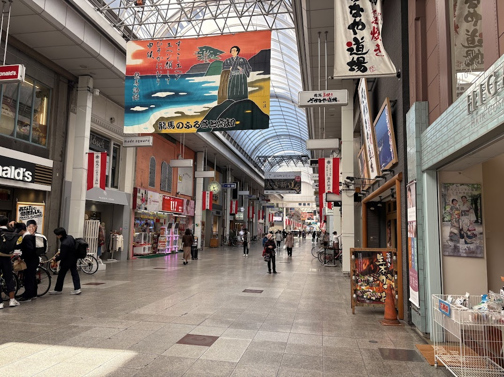
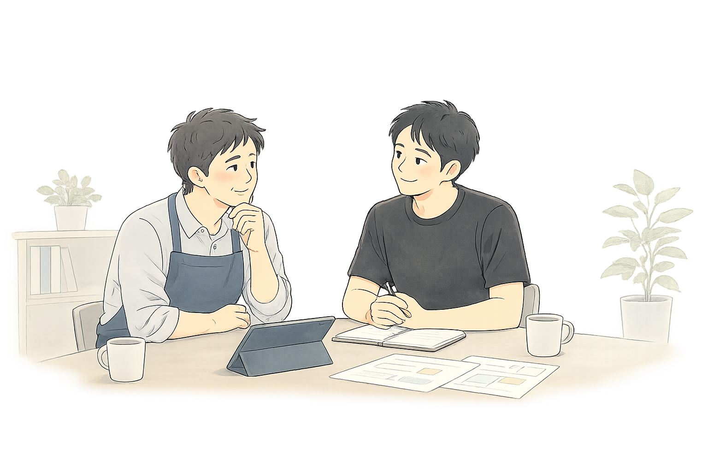
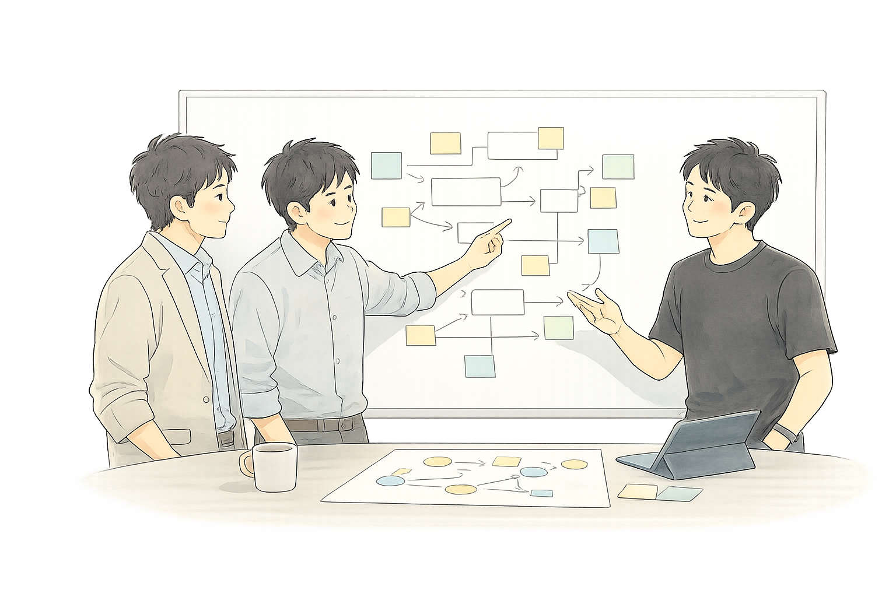

なぜ高知に会社を置いているのか
東京を拠点に活動しながら、なぜ高知に会社を置いているのか——地方への思いと、高知で見つけた自分の役割を書きました。

「なんとかしたい」と思いながらも、
なかなか前に進めない日が続いていませんか。
問題は、頑張りが足りないのではなく——
仕組みが、合っていないことがほとんどです。
なぜ、この仕事をしているのか
これまで多くの現場に関わってきました。一生懸命に取り組んでいるのに、なぜかうまくいかない。そういう場面を、何度も目の当たりにしてきました。
気づいたのは、うまくいかない理由のほとんどが「人の問題」ではなかったということです。流れが少し詰まっていたり、仕組みが噛み合っていなかったり、伝わるべきことが伝わっていなかったり。
そういう場所を少し整えるだけで、人は自然に動き始める。チームが前に進み始める。そういう変化を、何度も見てきました。
流れが整えば、人は自然と前へ進めます。
だから私は、ITそのものを売りたいわけではありません。現場が本来の価値を発揮できる状態を作ること。そのために、時にはシステムを作り、時には整理を行い、時には壁打ちをしながら、一緒に前へ進める形を模索しています。
山田 建太郎
株式会社 業務の改善 代表取締役
こんな場面、ありませんか
どれかひとつでも思い当たることがあれば、
きっと一緒に整理できます。

システムを入れたのに、現場がかえって忙しくなった。——そんな経験、ありませんか。
改善したいのに、どこから手をつければいいかわからない。——そういう状態でも相談できます。
IT会社と話しても、なんかかみ合わない、伝わらない。——それ、会話の構造の問題かもしれません。
できる人に集中しすぎて、その人が倒れたら機能しない。——いまのうちに整理できます。
忙しすぎて、改善のことを考える余裕すらない。——それが一番危ないサインです。
DXとか言われても、うちには大げさすぎる気がする。——小さく始められます。
少し整えるだけで、前に進める場合がほとんどです。
まずは、一緒に現状を整理することから始めましょう。
だから、こういう形で支援しています
状況や課題に合わせて、最適な関わり方を選べます。
「どれがいいかわからない」場合は、まず相談から始めましょう。
意思決定支援
課題の背景や本当の目的を整理し、改善ロードマップを作ります。1〜3ヶ月で、納得して次の一手を決められる状態を目指します。
課題解決支援
課題解決を目指しながら、状況に応じて役割を変え、ゴール達成まで伴走します。計画通りに進めることではなく、成果につながる状態を作ることを重視します。
開発プロジェクト支援
開発プロジェクトを成功させるために、経営・現場・開発会社をつなぎながら、導入後の成果まで見据えて支援します。
進め方
「なんかうまくいっていない」だけで大丈夫。
まず流れを整えることから、一緒に始めます。

各サービスが支援するフェーズ
各サービスが支援するフェーズ
よくある質問
特定の業種に限定していません。
これまで、印刷業、IT企業、個人事業主、スタートアップなど、さまざまな立場の方とご一緒してきました。
私がご支援するのは特定業界の専門知識というよりも、課題の整理や改善の進め方、仕組みづくりです。そのため、業種が違っても共通する課題についてはご支援できることが多くあります。
まずはお気軽にご相談ください。
はい。基本的にはオンラインで全国対応しています。打ち合わせや伴走支援は、Zoom や Google Meet などを利用して進めています。
また、状況に応じて対面での対応も可能です。その場合は交通費・宿泊費などの実費をご負担いただく形となりますが、現場を見ながら進めた方が効果的なケースでは、訪問対応も含めてご相談いただけます。
News & Stories
考えていること、起きていること、小さな変化を、少しずつ書いています。
お問い合わせ
そのくらいの気持ちで、声をかけてください。
整理できていなくても、何から話せばいいかわからなくても、大丈夫です。
ありがとうございます。
内容を確認し、
通常2営業日以内にご連絡します。
整理できていなくても大丈夫です。
まずはお話を聞かせてください。
※ 営業・勧誘・セールスを目的としたお問い合わせには返信しておりません。